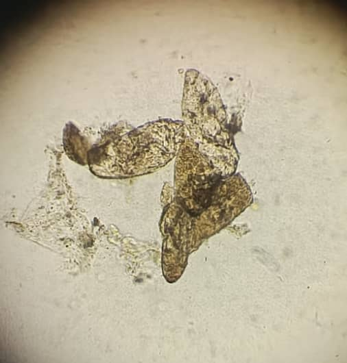
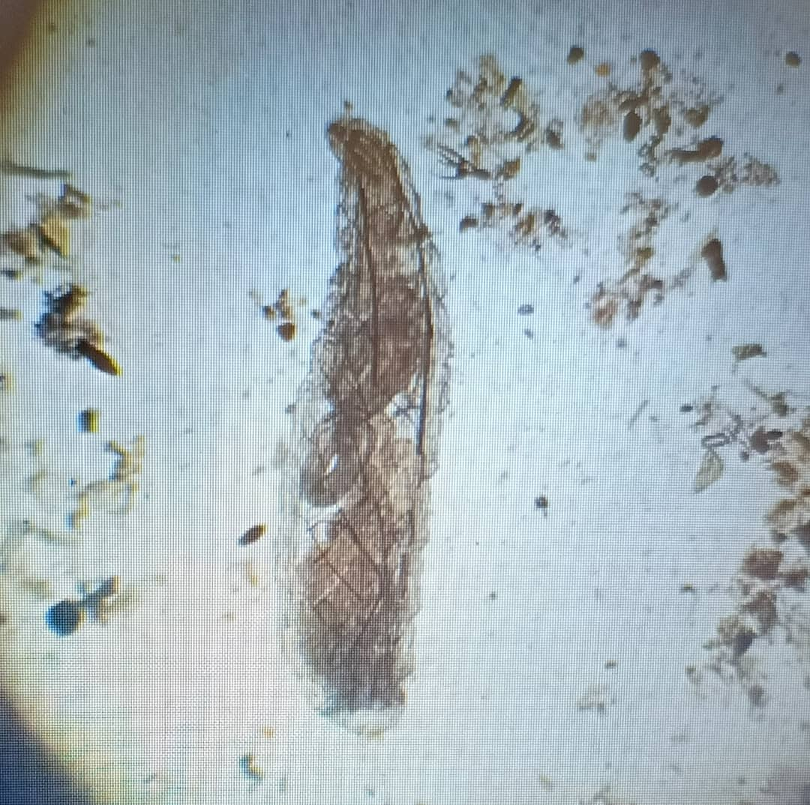
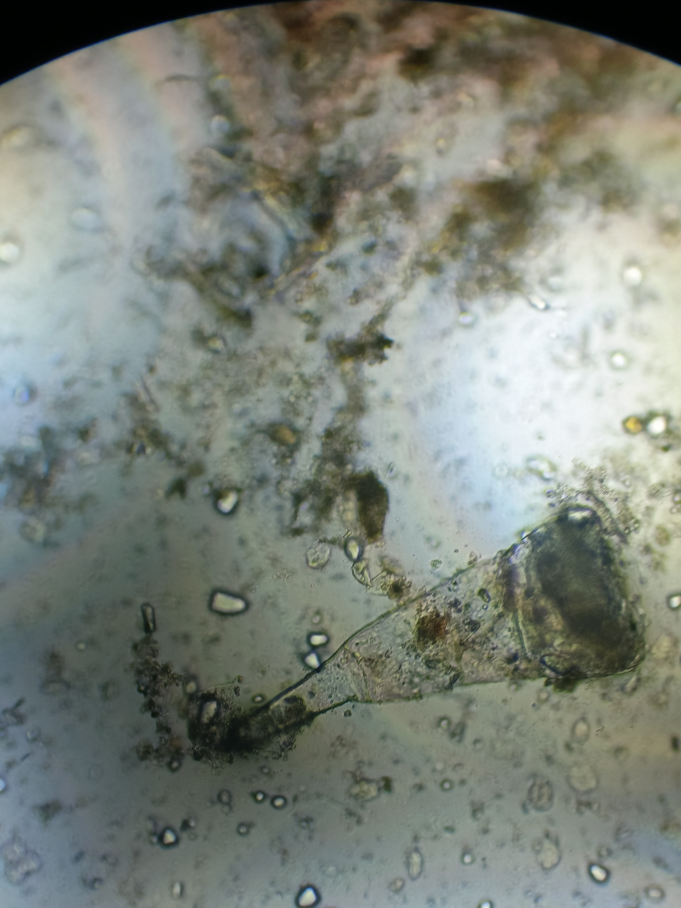
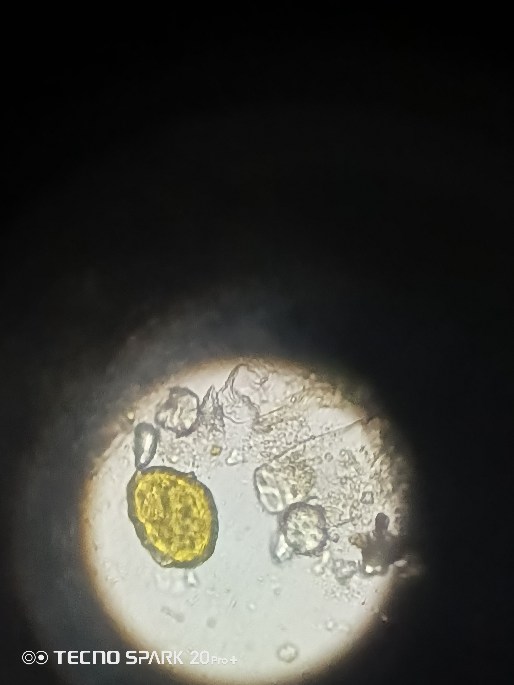

Parasite Microscopy • Case Studies • Health Insights

Close-up microscope image of diagnostic slides used to identify parasites and cellular changes.
A short YouTube clip highlighting key microscopy findings and research insights from the study.

A laboratory parasite microscopy image showing stained specimens and diagnostic detail.
A video walkthrough explaining the case study, laboratory methods, and results interpretation.

An image illustrating public health patterns and disease surveillance among communities in the Niger Delta.
A YouTube summary of research data, microscopy trends, and the clinical implications of the findings.

An advanced microscopy photograph capturing detailed medical observations for laboratory research.
A clinical training video demonstrating laboratory diagnosis steps and safe sample handling.